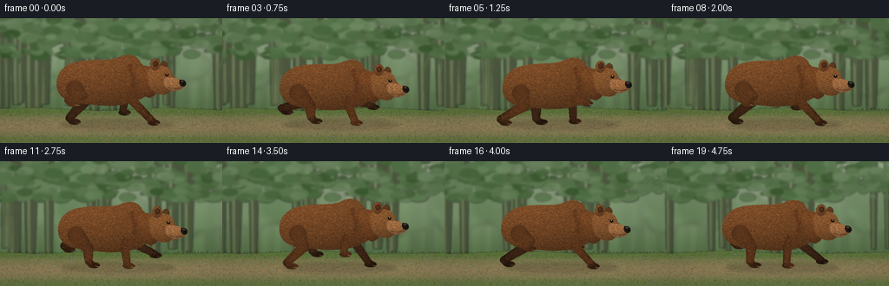
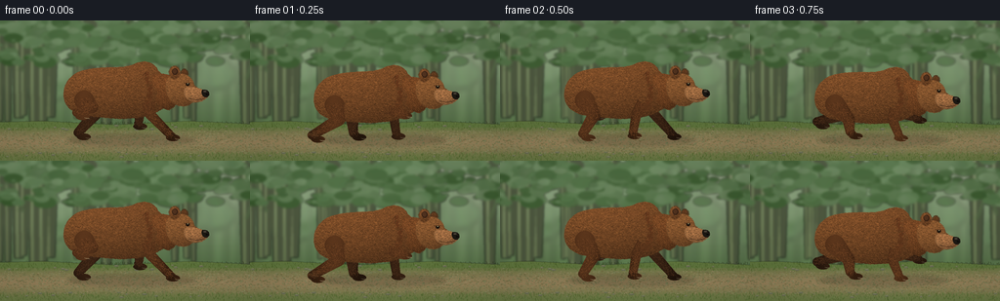

CODING AGENTS AS PIXEL WORLD MODELS
traex/GPT-6.1-Sol · instance_preservation_0012
点击播放 · 原生 RGB 像素
逐轮保存的候选
回放视频、检查图与代码变化。
每份候选均可单独播放。实际图片检查记录在下方工具轨迹中。
候选 01播放与检查图
点击播放 · 原生 RGB 像素


展开代码变化
--- 上一保存版本
+++ 本次保存版本
@@ -0,0 +1,254 @@
+from pathlib import Path
+import json, math
+import numpy as np
+from PIL import Image, ImageDraw, ImageFilter
+import artifact_io
+
+ROOT=Path(__file__).resolve().parent
+SPEC=json.loads((ROOT/'task_spec.json').read_text())
+W,H=SPEC['width'],SPEC['height']
+S=3
+rng=np.random.default_rng(218)
+
+def col(c): return tuple(int(np.clip(v,0,255)) for v in c)
+def box(b): return tuple(round(v*S) for v in b)
+def points(p): return [(round(x*S),round(y*S)) for x,y in p]
+def ellipse(d,b,fill): d.ellipse(box(b),fill=fill)
+def line(d,p,fill,width): d.line(points(p),fill=fill,width=max(1,round(width*S)))
+def bezier_shape(start,segments,n=15):
+ p=[start]; a=np.array(start,float)
+ for c1,c2,end in segments:
+ b,c,e=np.array(c1),np.array(c2),np.array(end)
+ for t in np.linspace(0,1,n+1)[1:]:
+ q=(1-t)**3*a+3*(1-t)**2*t*b+3*(1-t)*t*t*c+t**3*e
+ p.append(tuple(q))
+ a=e
+ return p
+
+def mask_shape(p):
+ im=Image.new('L',(W*S,H*S)); ImageDraw.Draw(im).polygon(points(p),fill=255)
+ return im
+
+# Fixed high-resolution fur field; individual components use fixed random seeds.
+yy,xx=np.mgrid[0:H*S,0:W*S].astype(float); xx/=S; yy/=S
+noise=np.random.default_rng(422).normal(0,1,(H*S,W*S))
+def fur_piece(mask, bounds, base=(94,56,30), seed=1, hairs=7000, direction=0.3, light=1):
+ x0,y0,x1,y1=bounds
+ u=(xx-(x0+x1)/2)/max(1,(x1-x0)/2)
+ v=(yy-(y0+y1)/2)/max(1,(y1-y0)/2)
+ # Directional soft light on dense russet fur, cooler shadow underneath.
+ illum=0.77 + .25*np.sqrt(np.maximum(0,1-np.minimum(1,u*u*.5+v*v*.7))) - .22*v - .075*u
+ illum += .028*np.sin(xx*1.61+yy*2.42)+.018*np.sin(xx*4.2-yy*1.3)+noise*.035
+ rgb=np.empty((H*S,W*S,4),np.uint8)
+ for c in range(3): rgb[:,:,c]=np.clip(base[c]*illum*light,0,255)
+ rgb[:,:,3]=np.asarray(mask)
+ im=Image.fromarray(rgb,'RGBA'); dr=ImageDraw.Draw(im)
+ rr=np.random.default_rng(seed); ar=np.asarray(mask)
+ for i in range(hairs):
+ x=rr.uniform(x0,x1); y=rr.uniform(y0,y1)
+ ix,iy=int(x*S),int(y*S)
+ if not (0<=ix<W*S and 0<=iy<H*S) or ar[iy,ix]<180: continue
+ ang=direction+.26*rr.normal()+.32*(y-(y0+y1)/2)/max(1,y1-y0)
+ ln=rr.uniform(.5,1.55)
+ x2=x+ln*math.cos(ang); y2=y+ln*math.sin(ang)
+ jx,jy=int(x2*S),int(y2*S)
+ if not(0<=jx<W*S and 0<=jy<H*S) or ar[jy,jx]<180: continue
+ value=rr.uniform(.70,1.30)*illum[iy,ix]*light
+ color=col(np.array(base)*value+np.array([5,3,1]))+(255,)
+ line(dr,[(x,y),(x2,y2)],color,rr.uniform(.15,.35))
+ # Silhouette irregularities: narrow individual guard hairs.
+ for i in range(1800):
+ x=rr.uniform(x0,x1); y=rr.uniform(y0,y1)
+ ix,iy=int(x*S),int(y*S)
+ if not(1<=ix<W*S-2 and 1<=iy<H*S-2) or ar[iy,ix]<240: continue
+ if min(ar[iy-2,ix],ar[iy+2,ix],ar[iy,ix-2],ar[iy,ix+2])>0: continue
+ dx=(x-(x0+x1)/2)/max(1,(x1-x0)/2); dy=(y-(y0+y1)/2)/max(1,(y1-y0)/2)
+ length=rr.uniform(.3,.9)
+ line(dr,[(x,y),(x+dx*length,y+dy*length)],col(np.array(base)*rr.uniform(.72,1.1))+(210,),.2)
+ return im
+
+# Atmospheric woodland, generated as a wide panning background.
+BW=650
+by,bx=np.mgrid[0:H*S,0:BW*S].astype(float); by/=S; bx/=S
+arr=np.empty((H*S,BW*S,3),np.uint8)
+for c,(a,b) in enumerate(zip((180,195,167),(81,111,68))):
+ t=np.clip(by/115,0,1); arr[:,:,c]=a*(1-t)+b*t
+bg=Image.fromarray(arr,'RGB')
+rd=np.random.default_rng(101)
+# Distant haze between dense tree layers.
+far=Image.new('RGBA',bg.size); d=ImageDraw.Draw(far)
+for i in range(110):
+ x=rd.uniform(-15,BW+15); y=rd.uniform(-28,70); r=rd.uniform(12,36)
+ color=col(np.array([99,133,90])+rd.uniform(-19,17))+(rd.integers(60,160).item(),)
+ ellipse(d,(x-r,y-r*.7,x+r,y+r*.7),color)
+for i in range(85):
+ x=rd.uniform(0,BW); thick=rd.uniform(1,4)
+ line(d,[(x,rd.uniform(0,20)),(x-2,107)],(80,102,75,95),thick)
+far=far.filter(ImageFilter.GaussianBlur(3*S)); bg=Image.alpha_composite(bg.convert('RGBA'),far)
+mid=Image.new('RGBA',bg.size); d=ImageDraw.Draw(mid)
+for i in range(40):
+ x=rd.uniform(-20,BW+20); w=rd.uniform(3,9); end=rd.uniform(97,112)
+ d.polygon(points([(x-w,0),(x+w,0),(x+w*.55,end),(x-w*.55,end)]),fill=(70,80,58,230))
+ line(d,[(x-w*.3,0),(x-w*.22,end)],(112,121,82,125),w*.28)
+ line(d,[(x,rd.uniform(24,60)),(x+rd.uniform(-26,26),rd.uniform(0,20))],(66,82,53,190),w*.4)
+for i in range(950):
+ x=rd.uniform(-5,BW+5); y=rd.uniform(-15,43); r=rd.uniform(2,12)
+ c=col(np.array([54,87,45])+rd.uniform(-15,30))+(rd.integers(115,225).item(),)
+ ellipse(d,(x-r,y-r*.5,x+r,y+r*.5),c)
+mid=mid.filter(ImageFilter.GaussianBlur(1.15*S)); bg=Image.alpha_composite(bg,mid)
+# Forest floor with warm, earthy running trail.
+ground=Image.new('RGBA',bg.size); d=ImageDraw.Draw(ground)
+polygon=[(0,105),(70,103),(145,107),(220,103),(300,107),(410,105),(530,102),(650,106),(650,144),(0,144)]
+d.polygon(points(polygon),fill=(90,112,59,255))
+for y in np.arange(110,144,.5):
+ m=math.exp(-((y-125)/12)**2)
+ c=col(np.array([93,111,62])*(1-m)+np.array([140,122,86])*m)
+ line(d,[(0,y),(BW,y)],c+(255,),.65)
+for i in range(12000):
+ x=rd.uniform(0,BW); y=rd.uniform(105,144)
+ if y<113 or y>136:
+ c=col(np.array([74,95,42])+rd.uniform(-16,31))+(230,)
+ line(d,[(x,y),(x+rd.uniform(-.8,.8),y-rd.uniform(.3,2.3))],c,.3)
+ else:
+ c=col(np.array([133,116,82])+rd.uniform(-23,25))+(rd.integers(100,240).item(),)
+ ellipse(d,(x,y,x+rd.uniform(.3,1.4),y+rd.uniform(.15,.5)),c)
+for i in range(65):
+ x=rd.uniform(0,BW); y=rd.choice([109,137])+rd.uniform(-2,3); r=rd.uniform(.6,2.5)
+ ellipse(d,(x-r,y-r*.35,x+r,y+r*.4),(97,101,78,255))
+ line(d,[(x-r*.6,y-r*.2),(x+r*.5,y-r*.25)],(165,157,119,180),.3)
+ground=ground.filter(ImageFilter.GaussianBlur(.25*S)); bg=Image.alpha_composite(bg,ground).convert('RGB')
+
+# Massive rump, pronounced grizzly shoulder hump and low head.
+body_outline=bezier_shape((65,80),[
+ ((64,65),(75,54),(91,52)),((111,49),(125,52),(137,47)),
+ ((146,42),(158,44),(162,54)),((169,59),(173,69),(177,78)),
+ ((173,89),(164,97),(147,101)),((126,105),(102,102),(83,99)),
+ ((71,95),(66,89),(65,80))])
+body=fur_piece(mask_shape(body_outline),(63,43,179,105),(106,66,36),18,16500,.18)
+# Subtle shoulder fur ridge and folds over powerful scapula.
+d=ImageDraw.Draw(body)
+rr=np.random.default_rng(7)
+for i in range(270):
+ y=rr.uniform(54,94); x=149+5*math.sin((y-54)/40*math.pi)+rr.normal(0,2)
+ line(d,[(x,y),(x-1,y+1.4)],(82+int(rr.uniform(-8,15)),47,25,255),.2)
+
+neck_outline=bezier_shape((156,58),[((168,55),(178,58),(184,66)),((188,76),(184,88),(173,94)),((163,94),(158,83),(156,73)),((155,67),(155,62),(156,58))])
+neck=fur_piece(mask_shape(neck_outline),(154,56,188,95),(100,60,32),40,3800,.85)
+head_outline=bezier_shape((170,65),[((172,59),(178,56),(185,57)),((193,57),(198,63),(199,69)),((203,71),(204,75),(201,81)),((197,89),(189,93),(179,88)),((172,84),(168,75),(170,65))])
+head=fur_piece(mask_shape(head_outline),(167,56,205,94),(116,75,42),41,3500,.5)
+# Rounded, furred ears rather than pointed canine ears.
+ear_mask=Image.new('L',(W*S,H*S)); ed=ImageDraw.Draw(ear_mask)
+ellipse(ed,(173,49,184,62),255)
+ear=fur_piece(ear_mask,(172,48,185,63),(108,67,37),43,800,.9)
+ed=ImageDraw.Draw(ear); ellipse(ed,(176,51.2,182,58),(57,35,22,255)); ellipse(ed,(176.7,52,180.8,56.8),(77,48,30,255))
+far_ear_mask=Image.new('L',(W*S,H*S)); ed=ImageDraw.Draw(far_ear_mask); ellipse(ed,(185,52,192,61),255)
+far_ear=fur_piece(far_ear_mask,(184,51,193,62),(80,49,27),42,400,.9)
+# Long broad muzzle, black wet nose, small deep-set eye.
+snout_outline=bezier_shape((190,71),[((195,69),(203,71),(209,74)),((213,75),(214,80),(210,83)),((203,87),(197,87),(192,83)),((188,80),(187,74),(190,71))])
+snout=fur_piece(mask_shape(snout_outline),(187,69,216,88),(139,95,59),48,1800,.1)
+sd=ImageDraw.Draw(snout)
+line(sd,[(194,82.4),(202,83.6),(209,82.1)],(47,30,20,255),.65)
+# Naturally rounded nose, tiny reflected daylight.
+nose=bezier_shape((207,73.5),[((212,72.5),(214.5,75),(214.1,78.5)),((213.5,81),(210.5,82),(208,80)),((206.2,78),(206,75),(207,73.5))])
+sd.polygon(points(nose),fill=(26,23,19,255)); ellipse(sd,(208.1,74.3,211.5,75.6),(73,66,55,255)); ellipse(sd,(210.8,77.2,212.5,78.6),(8,10,9,255))
+hd=ImageDraw.Draw(head)
+line(hd,[(188.5,66.4),(194.1,66.7)],(65,40,23,255),1.1)
+ellipse(hd,(190,66.2,193.9,69.2),(40,26,17,255)); ellipse(hd,(191.3,66.8,193.1,68.5),(12,13,10,255)); ellipse(hd,(191.8,66.7,192.55,67.3),(213,199,143,255))
+# Fixed body stack ensures the same bear persists throughout.
+upper=Image.new('RGBA',(W*S,H*S))
+for layer in (body,neck,far_ear,head,ear,snout): upper=Image.alpha_composite(upper,layer)
+
+# Limb masks built from tapered bone segments and round joints.
+def limb(a,k,ank,foot,front,near,seed):
+ m=Image.new('L',(W*S,H*S)); d=ImageDraw.Draw(m)
+ radii=(10.0,6.3,4.4) if not front else (8.0,5.0,4.0)
+ nodes=[a,k,ank]
+ for j in range(2):
+ p,q=nodes[j],nodes[j+1]; r0,r1=radii[j],radii[j+1]
+ dx,dy=q[0]-p[0],q[1]-p[1]; leng=math.hypot(dx,dy); nx,ny=-dy/leng,dx/leng
+ d.polygon(points([(p[0]+nx*r0,p[1]+ny*r0),(q[0]+nx*r1,q[1]+ny*r1),(q[0]-nx*r1,q[1]-ny*r1),(p[0]-nx*r0,p[1]-ny*r0)]),fill=255)
+ for p,r in zip(nodes,radii): ellipse(d,(p[0]-r,p[1]-r,p[0]+r,p[1]+r),255)
+ ellipse(d,(foot[0]-6,foot[1]-4,foot[0]+8,foot[1]+2.5),255)
+ d.polygon(points([(ank[0]-4,ank[1]-2),(foot[0]-5,foot[1]),(foot[0]+5,foot[1]),(ank[0]+4,ank[1]-2)]),fill=255)
+ # Fast dense coat, stable procedural noise, softly sculpted cylindrical limbs.
+ ar=np.asarray(m); u=(xx-a[0])/15
+ illum=.80+.15*np.cos(u*2)-.19*np.clip((yy-a[1])/40,0,1)+.025*noise
+ base=(95,57,31) if near else (64,40,24)
+ rgb=np.zeros((H*S,W*S,4),np.uint8)
+ for c in range(3): rgb[:,:,c]=np.clip(base[c]*illum,0,255)
+ rgb[:,:,3]=ar
+ im=Image.fromarray(rgb,'RGBA'); ld=ImageDraw.Draw(im)
+ rr=np.random.default_rng(seed)
+ for i in range(1100):
+ along=rr.uniform(0,2); j=min(1,int(along)); t=along-j
+ p,q=nodes[j],nodes[j+1]
+ x=p[0]*(1-t)+q[0]*t+rr.normal(0,radii[j]*.52); y=p[1]*(1-t)+q[1]*t+rr.normal(0,2)
+ ix,iy=int(x*S),int(y*S)
+ if not(0<=ix<W*S and 0<=iy<H*S) or ar[iy,ix]<240: continue
+ ang=math.atan2(q[1]-p[1],q[0]-p[0]); length=rr.uniform(.5,1.4)
+ x2,y2=x+math.cos(ang)*length,y+math.sin(ang)*length
+ ix2,iy2=int(x2*S),int(y2*S)
+ if not(0<=ix2<W*S and 0<=iy2<H*S) or ar[iy2,ix2]<240: continue
+ line(ld,[(x,y),(x2,y2)],col(np.array(base)*rr.uniform(.66,1.24))+(255,),.22)
+ for j in range(3):
+ x=foot[0]+3+j*1.65; y=foot[1]+.3+j*.18
+ line(ld,[(x,y),(x+1.8,y+.5)],(163,147,112,255) if near else (105,96,74,255),.48)
+ return im
+
+frames=[]
+for f in range(SPEC['frames']):
+ t=f/SPEC['fps']; phase=2*math.pi*t/1.03
+ # Double-suspension gallop: large stride, all four limbs articulate independently.
+ bob=-2.4*math.cos(2*phase)-.8*math.sin(phase)
+ angle=1.35*math.sin(phase)
+ shift_x=2*math.sin(t*.8)
+ scene=bg.crop((round((27+f*6.7)*S),0,round((27+f*6.7)*S)+W*S,H*S)).convert('RGBA')
+ shadow=Image.new('RGBA',scene.size); ds=ImageDraw.Draw(shadow)
+ ellipse(ds,(69+shift_x,117.5,200+shift_x,128),(36,35,21,64))
+ ellipse(ds,(87+shift_x,120,186+shift_x,126),(36,32,22,42))
+ shadow=shadow.filter(ImageFilter.GaussianBlur(2*S)); scene=Image.alpha_composite(scene,shadow)
+ animal=Image.new('RGBA',scene.size)
+ def leg_coords(front,near):
+ ph=phase+(0 if front else 1.75)+(0 if near else math.pi*.84)
+ hip=(151,79) if front else (86,84)
+ foot_x=hip[0]+(5 if front else 1)+20*math.cos(ph)
+ lift=max(0,math.sin(ph))
+ foot_y=121-bob-22*lift
+ if front:
+ knee=(hip[0]-5+7*math.cos(ph),98-6*lift)
+ ankle=(foot_x-1,foot_y-3)
+ else:
+ knee=(hip[0]+9+5*math.cos(ph),99-8*lift)
+ ankle=(foot_x-5,foot_y-5)
+ if not near:
+ hip=(hip[0]+4,hip[1]-1); knee=(knee[0]+4,knee[1]-1); ankle=(ankle[0]+4,ankle[1]-1); foot_x+=4; foot_y-=1
+ return hip,knee,ankle,(foot_x,foot_y)
+ for front in (False,True):
+ animal=Image.alpha_composite(animal,limb(*leg_coords(front,False),front,False,81 if front else 82))
+ animal=Image.alpha_composite(animal,upper)
+ for front in (False,True):
+ animal=Image.alpha_composite(animal,limb(*leg_coords(front,True),front,True,83 if front else 84))
+ # Shoulder coat overlays just the highest part of the near foreleg.
+ collar=Image.new('RGBA',scene.size)
+ collar.paste(body,(0,0))
+ cm=Image.new('L',scene.size); cd=ImageDraw.Draw(cm); ellipse(cd,(139,66,161,88),255)
+ ca=np.asarray(collar).copy(); ca[:,:,3]=np.minimum(ca[:,:,3],np.asarray(cm)); collar=Image.fromarray(ca)
+ animal=Image.alpha_composite(animal,collar)
+ animal=animal.rotate(angle,resample=Image.Resampling.BICUBIC,center=(132*S,82*S))
+ scene.alpha_composite(animal,(round(shift_x*S),round(bob*S)))
+ # Sparse kicked-up trail dust, drifting behind the runner.
+ dust=Image.new('RGBA',scene.size); dd=ImageDraw.Draw(dust)
+ for k in range(13):
+ age=((t*1.3+k*.13)%1)
+ x=77-age*30+3*math.sin(k*17); y=121-age*10+2*math.cos(k*3)
+ r=1+age*4
+ ellipse(dd,(x-r,y-r*.6,x+r,y+r*.6),(173,153,112,int(27*(1-age))))
+ dust=dust.filter(ImageFilter.GaussianBlur(1.2*S)); scene=Image.alpha_composite(scene,dust)
+ # Filmic tonal response and gentle optical vignette.
+ frame=np.asarray(scene.convert('RGB').resize((W,H),Image.Resampling.LANCZOS)).astype(float)
+ Y,X=np.mgrid[0:H,0:W]
+ vignette=1-.085*((X-W*.52)/(W*.7))**2-.045*((Y-H*.53)/(H*.8))**2
+ frame=np.clip(frame*vignette[:,:,None]+np.array([2,1,0]),0,255).astype(np.uint8)
+ frames.append(frame)
+artifact_io.save(np.stack(frames),ROOT)
+print('Saved',len(frames),'RGB frames:',np.stack(frames).shape)
可观测工具轨迹
实际执行的命令与返回图片。
命令 1exit 0
/bin/bash -lc 'ls -la && cat prompt.txt && cat GENERATION_RULES.md && cat task_spec.json'
命令 2exit 0
/bin/bash -lc 'cat artifact_io.py'
命令 3exit 0
/bin/bash -lc "cat > generate.py <<'PY'
from pathlib import Path
import json, math
import numpy as np
from PIL import Image, ImageDraw, ImageFilter
import artifact_io
ROOT=Path(__file__).resolve().parent
SPEC=json.loads((ROOT/'task_spec.json').read_text())
W,H=SPEC['width'],SPEC['height']
S=3
rng=np.random.default_rng(218)
def col(c): return tuple(int(np.clip(v,0,255)) for v in c)
def box(b): return tuple(round(v*S) for v in b)
def points(p): return [(round(x*S),round(y*S)) for x,y in p]
def ellipse(d,b,fill): d.ellipse(box(b),fill=fill)
def line(d,p,fill,width): d.line(points(p),fill=fill,width=max(1,round(width*S)))
def bezier_shape(start,segments,n=15):
p=[start]; a=np.array(start,float)
for c1,c2,end in segments:
b,c,e=np.array(c1),np.array(c2),np.array(end)
for t in np.linspace(0,1,n+1)[1:]:
q=(1-t)**3*a+3*(1-t)**2*t*b+3*(1-t)*t*t*c+t**3*e
p.append(tuple(q))
a=e
return p
def mask_shape(p):
im=Image.new('L',(W*S,H*S)); ImageDraw.Draw(im).polygon(points(p),fill=255)
return im
# Fixed high-resolution fur field; individual components use fixed random seeds.
yy,xx=np.mgrid[0:H*S,0:W*S].astype(float); xx/=S; yy/=S
noise=np.random.default_rng(422).normal(0,1,(H*S,W*S))
def fur_piece(mask, bounds, base=(94,56,30), seed=1, hairs=7000, direction=0.3, light=1):
x0,y0,x1,y1=bounds
u=(xx-(x0+x1)/2)/max(1,(x1-x0)/2)
v=(yy-(y0+y1)/2)/max(1,(y1-y0)/2)
# Directional soft light on dense russet fur, cooler shadow underneath.
illum=0.77 + .25*np.sqrt(np.maximum(0,1-np.minimum(1,u*u*.5+v*v*.7))) - .22*v - .075*u
illum += .028*np.sin(xx*1.61+yy*2.42)+.018*np.sin(xx*4.2-yy*1.3)+noise*.035
rgb=np.empty((H*S,W*S,4),np.uint8)
for c in range(3): rgb[:,:,c]=np.clip(base[c]*illum*light,0,255)
rgb[:,:,3]=np.asarray(mask)
im=Image.fromarray(rgb,'RGBA'); dr=ImageDraw.Draw(im)
rr=np.random.default_rng(seed); ar=np.asarray(mask)
for i in range(hairs):
x=rr.uniform(x0,x1); y=rr.uniform(y0,y1)
ix,iy=int(x*S),int(y*S)
if not (0<=ix<W*S and 0<=iy<H*S) or ar[iy,ix]<180: continue
ang=direction+.26*rr.normal()+.32*(y-(y0+y1)/2)/max(1,y1-y0)
ln=rr.uniform(.5,1.55)
x2=x+ln*math.cos(ang); y2=y+ln*math.sin(ang)
jx,jy=int(x2*S),int(y2*S)
if not(0<=jx<W*S and 0<=jy<H*S) or ar[jy,jx]<180: continue
value=rr.uniform(.70,1.30)*illum[iy,ix]*light
color=col(np.array(base)*value+np.array([5,3,1]))+(255,)
line(dr,[(x,y),(x2,y2)],color,rr.uniform(.15,.35))
# Silhouette irregularities: narrow individual guard hairs.
for i in range(1800):
x=rr.uniform(x0,x1); y=rr.uniform(y0,y1)
ix,iy=int(x*S),int(y*S)
if not(1<=ix<W*S-2 and 1<=iy<H*S-2) or ar[iy,ix]<240: continue
if min(ar[iy-2,ix],ar[iy+2,ix],ar[iy,ix-2],ar[iy,ix+2])>0: continue
dx=(x-(x0+x1)/2)/max(1,(x1-x0)/2); dy=(y-(y0+y1)/2)/max(1,(y1-y0)/2)
length=rr.uniform(.3,.9)
line(dr,[(x,y),(x+dx*length,y+dy*length)],col(np.array(base)*rr.uniform(.72,1.1))+(210,),.2)
return im
# Atmospheric woodland, generated as a wide panning background.
BW=650
by,bx=np.mgrid[0:H*S,0:BW*S].astype(float); by/=S; bx/=S
arr=np.empty((H*S,BW*S,3),np.uint8)
for c,(a,b) in enumerate(zip((180,195,167),(81,111,68))):
t=np.clip(by/115,0,1); arr[:,:,c]=a*(1-t)+b*t
bg=Image.fromarray(arr,'RGB')
rd=np.random.default_rng(101)
# Distant haze between dense tree layers.
far=Image.new('RGBA',bg.size); d=ImageDraw.Draw(far)
for i in range(110):
x=rd.uniform(-15,BW+15); y=rd.uniform(-28,70); r=rd.uniform(12,36)
color=col(np.array([99,133,90])+rd.uniform(-19,17))+(rd.integers(60,160).item(),)
ellipse(d,(x-r,y-r*.7,x+r,y+r*.7),color)
for i in range(85):
x=rd.uniform(0,BW); thick=rd.uniform(1,4)
line(d,[(x,rd.uniform(0,20)),(x-2,107)],(80,102,75,95),thick)
far=far.filter(ImageFilter.GaussianBlur(3*S)); bg=Image.alpha_composite(bg.convert('RGBA'),far)
mid=Image.new('RGBA',bg.size); d=ImageDraw.Draw(mid)
for i in range(40):
x=rd.uniform(-20,BW+20); w=rd.uniform(3,9); end=rd.uniform(97,112)
d.polygon(points([(x-w,0),(x+w,0),(x+w*.55,end),(x-w*.55,end)]),fill=(70,80,58,230))
line(d,[(x-w*.3,0),(x-w*.22,end)],(112,121,82,125),w*.28)
line(d,[(x,rd.uniform(24,60)),(x+rd.uniform(-26,26),rd.uniform(0,20))],(66,82,53,190),w*.4)
for i in range(950):
x=rd.uniform(-5,BW+5); y=rd.uniform(-15,43); r=rd.uniform(2,12)
c=col(np.array([54,87,45])+rd.uniform(-15,30))+(rd.integers(115,225).item(),)
ellipse(d,(x-r,y-r*.5,x+r,y+r*.5),c)
mid=mid.filter(ImageFilter.GaussianBlur(1.15*S)); bg=Image.alpha_composite(bg,mid)
# Forest floor with warm, earthy running trail.
ground=Image.new('RGBA',bg.size); d=ImageDraw.Draw(ground)
polygon=[(0,105),(70,103),(145,107),(220,103),(300,107),(410,105),(530,102),(650,106),(650,144),(0,144)]
d.polygon(points(polygon),fill=(90,112,59,255))
for y in np.arange(110,144,.5):
m=math.exp(-((y-125)/12)**2)
c=col(np.array([93,111,62])*(1-m)+np.array([140,122,86])*m)
line(d,[(0,y),(BW,y)],c+(255,),.65)
for i in range(12000):
x=rd.uniform(0,BW); y=rd.uniform(105,144)
if y<113 or y>136:
c=col(np.array([74,95,42])+rd.uniform(-16,31))+(230,)
line(d,[(x,y),(x+rd.uniform(-.8,.8),y-rd.uniform(.3,2.3))],c,.3)
else:
c=col(np.array([133,116,82])+rd.uniform(-23,25))+(rd.integers(100,240).item(),)
ellipse(d,(x,y,x+rd.uniform(.3,1.4),y+rd.uniform(.15,.5)),c)
for i in range(65):
x=rd.uniform(0,BW); y=rd.choice([109,137])+rd.uniform(-2,3); r=rd.uniform(.6,2.5)
ellipse(d,(x-r,y-r*.35,x+r,y+r*.4),(97,101,78,255))
line(d,[(x-r*.6,y-r*.2),(x+r*.5,y-r*.25)],(165,157,119,180),.3)
ground=ground.filter(ImageFilter.GaussianBlur(.25*S)); bg=Image.alpha_composite(bg,ground).convert('RGB')
# Massive rump, pronounced grizzly shoulder hump and low head.
body_outline=bezier_shape((65,80),[
((64,65),(75,54),(91,52)),((111,49),(125,52),(137,47)),
((146,42),(158,44),(162,54)),((169,59),(173,69),(177,78)),
((173,89),(164,97),(147,101)),((126,105),(102,102),(83,99)),
((71,95),(66,89),(65,80))])
body=fur_piece(mask_shape(body_outline),(63,43,179,105),(106,66,36),18,16500,.18)
# Subtle shoulder fur ridge and folds over powerful scapula.
d=ImageDraw.Draw(body)
rr=np.random.default_rng(7)
for i in range(270):
y=rr.uniform(54,94); x=149+5*math.sin((y-54)/40*math.pi)+rr.normal(0,2)
line(d,[(x,y),(x-1,y+1.4)],(82+int(rr.uniform(-8,15)),47,25,255),.2)
neck_outline=bezier_shape((156,58),[((168,55),(178,58),(184,66)),((188,76),(184,88),(173,94)),((163,94),(158,83),(156,73)),((155,67),(155,62),(156,58))])
neck=fur_piece(mask_shape(neck_outline),(154,56,188,95),(100,60,32),40,3800,.85)
head_outline=bezier_shape((170,65),[((172,59),(178,56),(185,57)),((193,57),(198,63),(199,69)),((203,71),(204,75),(201,81)),((197,89),(189,93),(179,88)),((172,84),(168,75),(170,65))])
head=fur_piece(mask_shape(head_outline),(167,56,205,94),(116,75,42),41,3500,.5)
# Rounded, furred ears rather than pointed canine ears.
ear_mask=Image.new('L',(W*S,H*S)); ed=ImageDraw.Draw(ear_mask)
ellipse(ed,(173,49,184,62),255)
ear=fur_piece(ear_mask,(172,48,185,63),(108,67,37),43,800,.9)
ed=ImageDraw.Draw(ear); ellipse(ed,(176,51.2,182,58),(57,35,22,255)); ellipse(ed,(176.7,52,180.8,56.8),(77,48,30,255))
far_ear_mask=Image.new('L',(W*S,H*S)); ed=ImageDraw.Draw(far_ear_mask); ellipse(ed,(185,52,192,61),255)
far_ear=fur_piece(far_ear_mask,(184,51,193,62),(80,49,27),42,400,.9)
# Long broad muzzle, black wet nose, small deep-set eye.
snout_outline=bezier_shape((190,71),[((195,69),(203,71),(209,74)),((213,75),(214,80),(210,83)),((203,87),(197,87),(192,83)),((188,80),(187,74),(190,71))])
snout=fur_piece(mask_shape(snout_outline),(187,69,216,88),(139,95,59),48,1800,.1)
sd=ImageDraw.Draw(snout)
line(sd,[(194,82.4),(202,83.6),(209,82.1)],(47,30,20,255),.65)
# Naturally rounded nose, tiny reflected daylight.
nose=bezier_shape((207,73.5),[((212,72.5),(214.5,75),(214.1,78.5)),((213.5,81),(210.5,82),(208,80)),((206.2,78),(206,75),(207,73.5))])
sd.polygon(points(nose),fill=(26,23,19,255)); ellipse(sd,(208.1,74.3,211.5,75.6),(73,66,55,255)); ellipse(sd,(210.8,77.2,212.5,78.6),(8,10,9,255))
hd=ImageDraw.Draw(head)
line(hd,[(188.5,66.4),(194.1,66.7)],(65,40,23,255),1.1)
ellipse(hd,(190,66.2,193.9,69.2),(40,26,17,255)); ellipse(hd,(191.3,66.8,193.1,68.5),(12,13,10,255)); ellipse(hd,(191.8,66.7,192.55,67.3),(213,199,143,255))
# Fixed body stack ensures the same bear persists throughout.
upper=Image.new('RGBA',(W*S,H*S))
for layer in (body,neck,far_ear,head,ear,snout): upper=Image.alpha_composite(upper,layer)
# Limb masks built from tapered bone segments and round joints.
def limb(a,k,ank,foot,front,near,seed):
m=Image.new('L',(W*S,H*S)); d=ImageDraw.Draw(m)
radii=(10.0,6.3,4.4) if not front else (8.0,5.0,4.0)
nodes=[a,k,ank]
for j in range(2):
p,q=nodes[j],nodes[j+1]; r0,r1=radii[j],radii[j+1]
dx,dy=q[0]-p[0],q[1]-p[1]; leng=math.hypot(dx,dy); nx,ny=-dy/leng,dx/leng
d.polygon(points([(p[0]+nx*r0,p[1]+ny*r0),(q[0]+nx*r1,q[1]+ny*r1),(q[0]-nx*r1,q[1]-ny*r1),(p[0]-nx*r0,p[1]-ny*r0)]),fill=255)
for p,r in zip(nodes,radii): ellipse(d,(p[0]-r,p[1]-r,p[0]+r,p[1]+r),255)
ellipse(d,(foot[0]-6,foot[1]-4,foot[0]+8,foot[1]+2.5),255)
d.polygon(points([(ank[0]-4,ank[1]-2),(foot[0]-5,foot[1]),(foot[0]+5,foot[1]),(ank[0]+4,ank[1]-2)]),fill=255)
# Fast dense coat, stable procedural noise, softly sculpted cylindrical limbs.
ar=np.asarray(m); u=(xx-a[0])/15
illum=.80+.15*np.cos(u*2)-.19*np.clip((yy-a[1])/40,0,1)+.025*noise
base=(95,57,31) if near else (64,40,24)
rgb=np.zeros((H*S,W*S,4),np.uint8)
for c in range(3): rgb[:,:,c]=np.clip(base[c]*illum,0,255)
rgb[:,:,3]=ar
im=Image.fromarray(rgb,'RGBA'); ld=ImageDraw.Draw(im)
rr=np.random.default_rng(seed)
for i in range(1100):
along=rr.uniform(0,2); j=min(1,int(along)); t=along-j
p,q=nodes[j],nodes[j+1]
x=p[0]*(1-t)+q[0]*t+rr.normal(0,radii[j]*.52); y=p[1]*(1-t)+q[1]*t+rr.normal(0,2)
ix,iy=int(x*S),int(y*S)
if not(0<=ix<W*S and 0<=iy<H*S) or ar[iy,ix]<240: continue
ang=math.atan2(q[1]-p[1],q[0]-p[0]); length=rr.uniform(.5,1.4)
x2,y2=x+math.cos(ang)*length,y+math.sin(ang)*length
ix2,iy2=int(x2*S),int(y2*S)
if not(0<=ix2<W*S and 0<=iy2<H*S) or ar[iy2,ix2]<240: continue
line(ld,[(x,y),(x2,y2)],col(np.array(base)*rr.uniform(.66,1.24))+(255,),.22)
for j in range(3):
x=foot[0]+3+j*1.65; y=foot[1]+.3+j*.18
line(ld,[(x,y),(x+1.8,y+.5)],(163,147,112,255) if near else (105,96,74,255),.48)
return im
frames=[]
for f in range(SPEC['frames']):
t=f/SPEC['fps']; phase=2*math.pi*t/1.03
# Double-suspension gallop: large stride, all four limbs articulate independently.
bob=-2.4*math.cos(2*phase)-.8*math.sin(phase)
angle=1.35*math.sin(phase)
shift_x=2*math.sin(t*.8)
scene=bg.crop((round((27+f*6.7)*S),0,round((27+f*6.7)*S)+W*S,H*S)).convert('RGBA')
shadow=Image.new('RGBA',scene.size); ds=ImageDraw.Draw(shadow)
ellipse(ds,(69+shift_x,117.5,200+shift_x,128),(36,35,21,64))
ellipse(ds,(87+shift_x,120,186+shift_x,126),(36,32,22,42))
shadow=shadow.filter(ImageFilter.GaussianBlur(2*S)); scene=Image.alpha_composite(scene,shadow)
animal=Image.new('RGBA',scene.size)
def leg_coords(front,near):
ph=phase+(0 if front else 1.75)+(0 if near else math.pi*.84)
hip=(151,79) if front else (86,84)
foot_x=hip[0]+(5 if front else 1)+20*math.cos(ph)
lift=max(0,math.sin(ph))
foot_y=121-bob-22*lift
if front:
knee=(hip[0]-5+7*math.cos(ph),98-6*lift)
ankle=(foot_x-1,foot_y-3)
else:
knee=(hip[0]+9+5*math.cos(ph),99-8*lift)
ankle=(foot_x-5,foot_y-5)
if not near:
hip=(hip[0]+4,hip[1]-1); knee=(knee[0]+4,knee[1]-1); ankle=(ankle[0]+4,ankle[1]-1); foot_x+=4; foot_y-=1
return hip,knee,ankle,(foot_x,foot_y)
for front in (False,True):
animal=Image.alpha_composite(animal,limb(*leg_coords(front,False),front,False,81 if front else 82))
animal=Image.alpha_composite(animal,upper)
for front in (False,True):
animal=Image.alpha_composite(animal,limb(*leg_coords(front,True),front,True,83 if front else 84))
# Shoulder coat overlays just the highest part of the near foreleg.
collar=Image.new('RGBA',scene.size)
collar.paste(body,(0,0))
cm=Image.new('L',scene.size); cd=ImageDraw.Draw(cm); ellipse(cd,(139,66,161,88),255)
ca=np.asarray(collar).copy(); ca[:,:,3]=np.minimum(ca[:,:,3],np.asarray(cm)); collar=Image.fromarray(ca)
animal=Image.alpha_composite(animal,collar)
animal=animal.rotate(angle,resample=Image.Resampling.BICUBIC,center=(132*S,82*S))
scene.alpha_composite(animal,(round(shift_x*S),round(bob*S)))
# Sparse kicked-up trail dust, drifting behind the runner.
dust=Image.new('RGBA',scene.size); dd=ImageDraw.Draw(dust)
for k in range(13):
age=((t*1.3+k*.13)%1)
x=77-age*30+3*math.sin(k*17); y=121-age*10+2*math.cos(k*3)
r=1+age*4
ellipse(dd,(x-r,y-r*.6,x+r,y+r*.6),(173,153,112,int(27*(1-age))))
dust=dust.filter(ImageFilter.GaussianBlur(1.2*S)); scene=Image.alpha_composite(scene,dust)
# Filmic tonal response and gentle optical vignette.
frame=np.asarray(scene.convert('RGB').resize((W,H),Image.Resampling.LANCZOS)).astype(float)
Y,X=np.mgrid[0:H,0:W]
vignette=1-.085*((X-W*.52)/(W*.7))**2-.045*((Y-H*.53)/(H*.8))**2
frame=np.clip(frame*vignette[:,:,None]+np.array([2,1,0]),0,255).astype(np.uint8)
frames.append(frame)
artifact_io.save(np.stack(frames),ROOT)
print('Saved',len(frames),'RGB frames:',np.stack(frames).shape)
PY
python generate.py"命令 4exit 0
/bin/bash -lc "python - <<'PY'
from pathlib import Path
import numpy as np
from PIL import Image
p=Path('.')
a=np.load(p/'pixels.npz')['pixels']
assert a.shape == (144,256,20)
assert len(list((p/'frames').glob('*.png')))==20
assert all(Image.open(p/'frames'/f'{i:02d}.png').mode=='RGB' for i in range(20))
assert (p/'index.html').stat().st_size>0
print('Validated output: 20 RGB frames, 256x144, 4 fps; player and pixel archive present.')
PY"保存候选 1 份；完成命令 4 次；可验证图片返回 0 张。原始 API 响应与完整日志保留在本地。